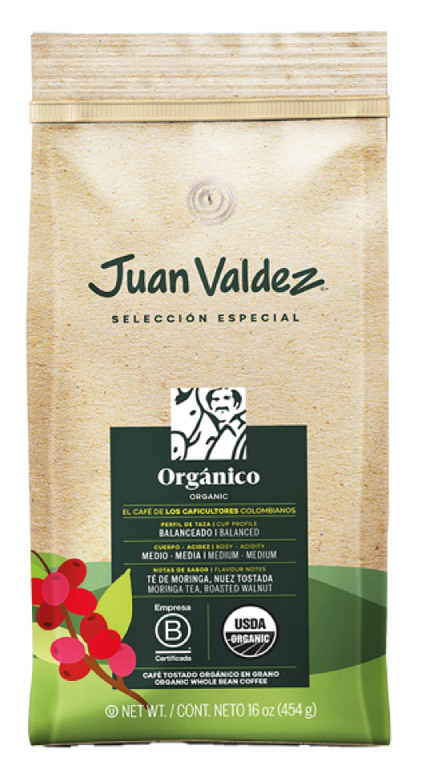

En Procafecol S.A. la sostenibilidad se encuentra en el centro del modelo de negocio, reflejándose en su
objetivo estratégico: Generar valor compartido para caficultores, colaboradores, consumidores, accionistas y
aliados comerciales.
En este sentido, reconocemos la importancia de implementar buenas prácticas sociales y ambientales tanto en
nuestra operación como en la cadena de abastecimiento, alcanzando una nueva manera de relacionarnos con los
diferentes grupos de interés, mientras impulsamos un negocio competitivo.
Lo anterior lo logramos a través de tres grandes ejes:
Proveeduría Sostenible
Procuramos ser una marca responsable y sostenible a través de nuestra cadena de
abastecimiento.
Plan Amigo Caficultor
Propendemos porque todas nuestras acciones como marca, generen valor a nuestros
caficultores colombianos.
Economía Circular y mitigación del cambio climático
Desarrollamos una estrategia que permita la mitigación del cambio climático,
considerando la
economía circular como un modelo que contribuye a este objetivo.
Juan Valdez
CERTIFICACIONES
En febrero de 2021 nos convertimos en Empresa B, siendo la primera cadena de tiendas de café
en el mundo en
alcanzar esta certificación. Con esto, nos unimos a un movimiento global de compañías que tienen como
propósito de negocio contribuir a la solución de los principales problemas sociales y ambientales.
Ser Empresa B para Procafecol S.A. implica que partiendo del propósito superior de generar valor, más allá
de lo económico a los caficultores colombianos, trabajamos por tener una cadena de abastecimiento trazable y
transparente, y por desarrollar altos estándares de gobierno corporativo. Así mismo, velamos por el
bienestar de nuestros productores y colaboradores, estando comprometidos con alcanzar las mejores prácticas
sociales y ambientales en cada eslabón de nuestra operación.
¿Que implica ser Empresa B?
1
Propósito
2
Cambio de estatuto
3
Autoevaluación
4
Interdepencia
¿QUE IMPLICA SER EMPRESA B?
El modelo de Empresas B parte del propósito, en el que nuestra compañía se compromete a crear impacto
positivo en la sociedad y el ambiente. Incluye un cambio de estatutos, el cual amplía nuestra
responsabilidad no solo con nuestros accionistas sino con todos nuestros grupos de interés, al incluir
intereses de generación de valor compartido dentro de nuestra razón de ser.
Así mismo, parte de un proceso de certificación, en el que a través de la herramienta de autoevaluación
B
Impact Assessment, medimos nuestros estándares de transparencia y gestión en cuatro dimensiones
(gobernanza,
trabajadores, medio ambiente y comunidad), alrededor de nuestro modelo de negocio. Por último, exige una
declaración de interdependencia, en la que nos concebimos como parte de una comunidad con un objetivo común:
Redefinir el sentido del éxito en la economía.
110.000 Empresas en el mundo se han medido con esta evaluación.
+3.700 Empresas se han certificado como Empresa B.
+600 Empresas B en Latinoamérica.
70 Empresas B en Colombia.
Hoy hacemos parte de esas 70 empresas colombianas que se comprometen a seguir aportando en la construcción de
una nueva economía, convirtiendo los desafíos mundiales en oportunidades de generación de valor para la
sociedad y el planeta.
Ahora como Empresa B, continuaremos enalteciendo el nombre de todo un país y del café colombiano en el
mundo.
Desde el 2019, lanzamos nuestra política de huevos libres de jaula, gracias al apoyo de nuestros proveedores
y
las organizaciones de protección animal Humane Society International (HSI) y Sinergia Animal. En ella, nos
comprometimos que, a más tardar en 2025, el 100% de nuestro consumo de huevo (incluyendo huevos procesados e
ingredientes que contengan huevo) provendrá de gallinas libres de jaula. De momento, ya hemos pasado nuestro
consumo de huevo con cáscara en Bogotá, donde se concentra el 90% de nuestra compra, por huevos de gallinas
libres de jaula.
Nuestro café orgánico Juan Valdez, es el resultado de una agricultura que promueve condiciones con los más
altos estándares de cuidado con el ambiente. Es cultivado y producido en fincas colombianas, bajo una serie
de métodos, prácticas e insumos que incluyen el cumplimiento estricto en temas como:
Uso de recursos renovables.
Conservación de suelos y calidad del agua, a través del control de sustancias químicas, pesticidas
artificiales, fertilizantes elaborados con ingredientes artificiales o lodos residuales.
Limitación del uso de plantas y animales genéticamente modificados.
Garantía de transparencia en el etiquetado.
Seguimiento y auditoría hasta el eslabón de transporte en la cadena de abastecimiento.
Estos lineamientos nos permiten mantener una garantía de confianza, sobre la producción de café desde la
finca, hasta su procesamiento industrial, lo que asegura que se han utilizado únicamente insumos orgánicos
en el proceso. En Juan Valdez, contamos con productos certificados en los siguientes sellos:
Alimento Ecológico (Mercado Colombiano)
USDA (Mercado Americano)
>UE (Mercado de la Comunidad Europea)
>JAS (Mercado Japonés)
Productos certificados: Café Juan Valdez tostado orgánico en losgramajes: 500gr-283gr-1000g .
Alcance: Procesamiento y Exportación.

Certificación Sello UTZ
El café Finca de Juan Valdez, cuenta con la certificación UTZ, sello que representa una agricultura
sostenible, enfocada en brindar mejores oportunidades para los agricultores, sus familias y el planeta.
Gracias a este programa, los agricultores que producen este café, aprenden mejores prácticas agrícolas,
crean mejores condiciones laborales y cuidan mejor de la naturaleza.
Este café cuenta con un abastecimiento y una producción agrícola responsable a través de un programa global
que verifica que aquellos productos han sido elaborados de acuerdo a los criterios del código de conducta
UTZ CERTIFIED, y cumplen el estándar de la Cadena de Custodia.
las fincas certificadas con UTZ son lugares más seguros para vivir y trabajar, y donde los derechos
humanos son respetados.
Retribución-ganancias: los métodos agrícolas de UTZ resultan en cultivos con mejores calidades y más
eficientes a menor precio.
Planeta: los productores certificados en UTZ utilizan la tierra, el agua y la energía cuidadosamente,
protegiendo los recursos naturales.
Así mismo, el Código de Conducta establece los requisitos que son el centro del programa, abarcando mejores
prácticas agrícolas y condiciones laborales, un mejor cuidado de la naturaleza y de las próximas
generaciones. Esto contribuye a que los agricultores proveedores de la marca tengan mejores cosechas y
generen un mayor ingreso a partir de estas, aumentando su adaptación social y económica, así como
preservando los recursos naturales
Productos certificados: Café Juan Valdez tostado orgánico en losgramajes: 500gr-283gr-1000g .
Alcance: Procesamiento y Exportación.